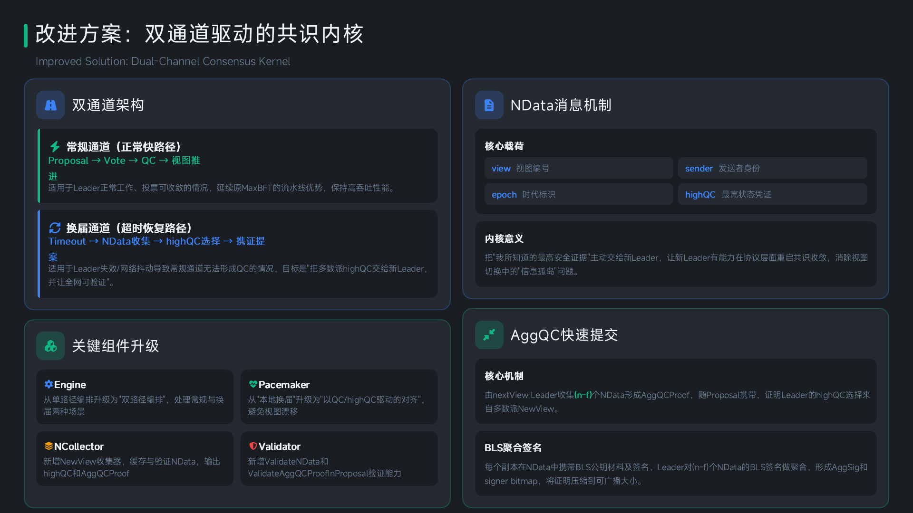

双通道驱动的共识内核：NData 机制 + AggQC 快速提交
创新点 01：NData 视图切换状态同步机制
补全并实现了 NData（New-View Data）消息机制。节点在视图切换时主动上报本地最高 QC（highQC），新 Leader 在收集到法定数量（N-f）的 NData 后，选取最高状态作为新提案的依据。核心价值：从协议层面解决了视图切换中的"信息孤岛"问题，使系统在异常场景下能更快完成状态收敛与视图恢复。
创新点 02：AggQC 快速提交机制
引入 AggQC（Aggregated Quorum Certificate）机制，结合聚合签名对多副本投票进行压缩与聚合，将传统三阶段提交流程优化为两阶段提交。核心技术：使用 BLS 聚合签名对（N-f）个 NData 的投票进行聚合，将证明压缩到可广播大小。核心价值：有效降低了区块确认延迟，减少网络冗余消息开销与节点验证成本。
双通道驱动的共识内核
常规通道（正常快路径）：Proposal → Vote → QC → 视图推进，适用于 Leader 正常工作的情况，延续原 MaxBFT 的流水线优势。
换届通道（超时恢复路径）：Timeout → NData 收集 → highQC 选择 → 携证提案，适用于 Leader 失效或网络抖动导致常规通道无法形成 QC 的情况。
Event-Driven Pacemaker
从"本地换届"升级为"以 QC/highQC 驱动的对齐"，消除视图漂移。Event-Driven 架构消除轮询等待，使系统在异常场景下更快做出反应。新增 NCollector（NewView 收集器）缓存与验证 NData，输出 highQC 和 AggQCProof。